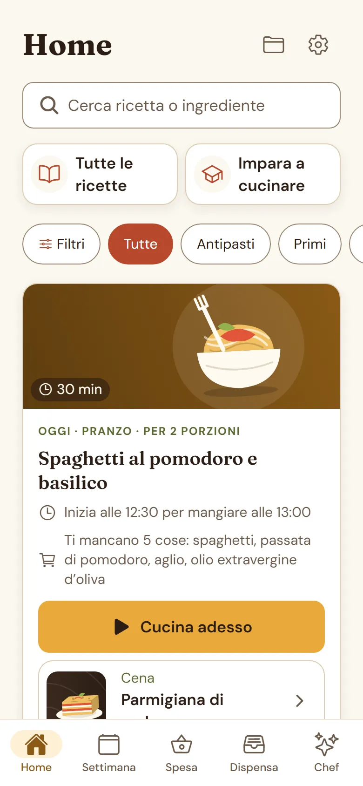
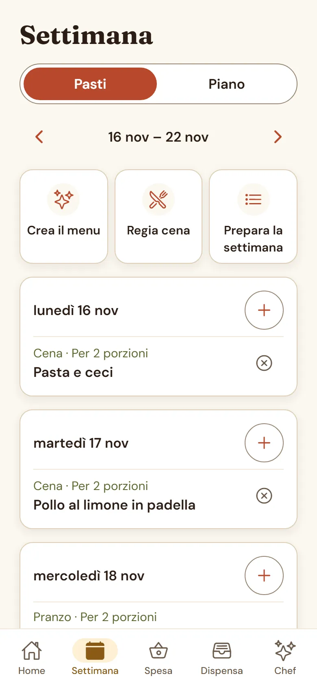
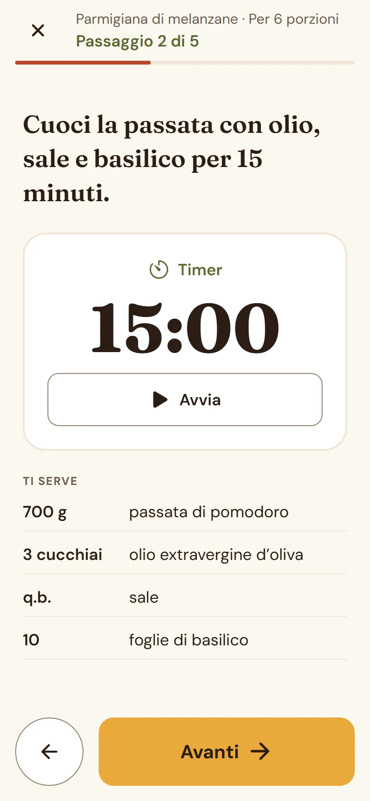
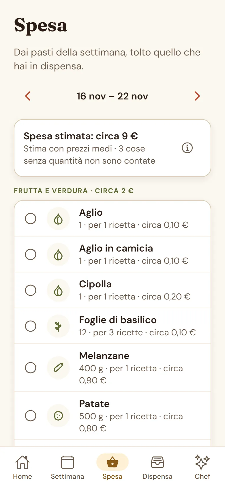

Uno chef con l'intelligenza artificiale
Chiedi un piatto con quello che hai, o fai mettere in ordine una tua ricetta. Solo per maggiorenni: le risposte possono contenere errori e lo diciamo sempre.
GustOH mette in ordine la cucina di casa: ricette spiegate passo passo, la settimana dei pasti, la lista della spesa e la dispensa. Tutto in un'app, in italiano e in inglese.
Presto su App Store e Google Play.


Ogni ricetta conosce i suoi tempi. Scegli l'ora in tavola e GustOH ti dice quando accendere il fuoco, passaggio per passaggio.
Ricette della tradizione italiana scritte con parole semplici. Le porzioni si ricalcolano, i tempi sono chiari e la cucina guidata ti mostra un passaggio alla volta, con gli ingredienti di quel passaggio e il timer.


Decidi i pasti della settimana e la lista della spesa si scrive da sola, divisa per reparto e senza quello che hai già in casa. La dispensa ti avvisa quando qualcosa sta finendo.


Chiedi un piatto con quello che hai, o fai mettere in ordine una tua ricetta. Solo per maggiorenni: le risposte possono contenere errori e lo diciamo sempre.
Lezioni di pochi minuti su tecniche e attrezzi di casa. Alla fine provi con una ricetta vera.
Condividi i tuoi piatti e rifai quelli degli altri. Le ricette con gli allergeni che hai escluso non compaiono mai.
Parti da zero: ricette facili e guidate, un passo alla volta.
Cucini ogni giorno: settimana, spesa e dispensa in ordine.
Segui un piano o vuoi mangiare sano e proteico.
Piatti più ricercati e cene con ospiti, ben coordinate.
Alcune funzioni richiedono l'abbonamento Premium. La prova dura 7 giorni: durata e prezzo sono scritti prima di iniziare e ti avvisiamo 2 giorni prima della fine.